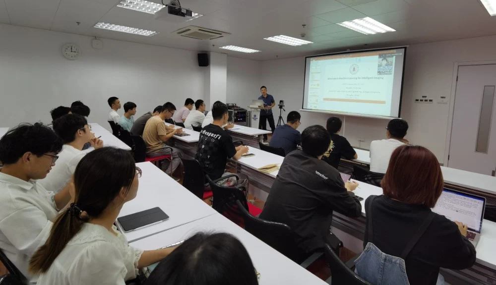
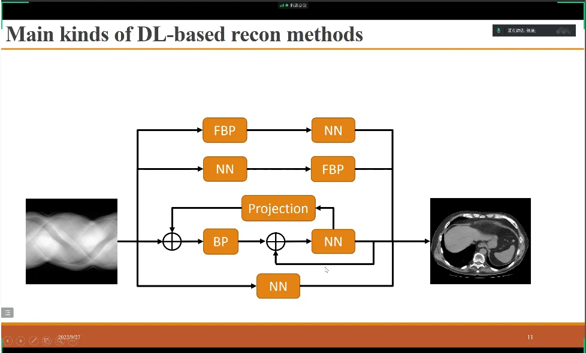
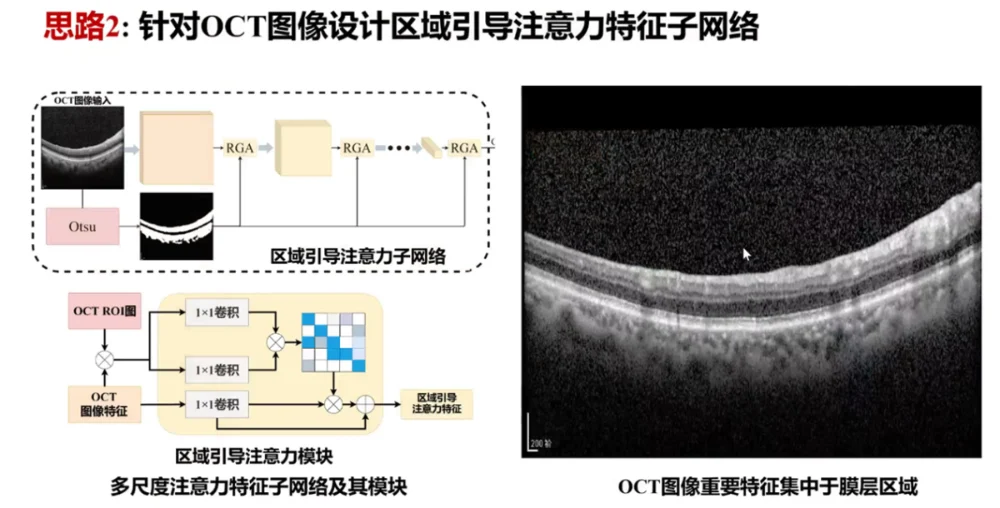

医学图像/眼科影像专题学术分享会
---- IMED中国第四十九讲、第五十讲
邀请嘉宾：
张意教授 四川大学
方乐缘教授 湖南大学
2022年9月27日，IMED团队邀请到张意教授和方乐缘教授为大家做了一场关于医学图像、眼科影像的专题学术分享会，详尽而丰富的报告内容极大的拓宽了同学们的知识面，也加深了同学们对深度学习在医学影像中发挥作用的认知。
张意教授来自四川大学，主要研究工作包括低剂量CT重建、快速MRI重建等，方乐缘教授来自湖南大学，主要从事弱监督学习、遥感和医学图像处理与分析等方面的研究。本次分享会由IMED团队的张炯副研究员主持。

图１. 张炯老师就本次分享会做一个简单的开场白
在张炯老师简单的开场白之后，张意教授开始了他的题为《基于机器学习的智能成像研究进展》的分享。首先，张意教授介绍了使用AI技术进行医学成像的一系列主流方法与进展，并分别列举介绍了不同时期各种主流的AI框架与方法。之后，张教授介绍了他们课题组在低剂量CT重建与快速MRI重建方面的一系列具有代表性的工作与成果。紧接着张教授列举了在所研究中仍然存在的一些挑战，例如如何保证模型的鲁棒性，如何解决数据的不一致性以及分布式训练会存在的数据隐私问题，并且就未来研究的一些潜在的热点方向如可解释性研究和多模态等进行了介绍。在分享结束后，郝华颖同学就CT评估指标与去噪、重建下游任务应用等问题咨询张教授，张教授也给出了详实的回答，并建议在具体任务中寻求临床医生的配合来确定和评估评价指标。之后马煜辉同学就图像噪声是否会对临床检查产生较大的影响和重建任务的图像是否为无噪声图像等问题与张教授进行了交流，张教授表示噪声对临床检查造成的影响是有限的，而他们的重建任务则都是基于无噪声图像。张教授的分享内容丰富，条理清晰，介绍的故事环环相扣，循循善诱，接近一个半小时的分享与交流，让同学们都觉得受益匪浅。

图２. 张意教授分享基于深度学习重建图像的四种方式
方乐缘教授则进行了题为《眼科图像的弱监督智能分析》的分享。方教授首先介绍了眼科研究的背景和意义，并且介绍了深度学习方法在眼科图像自动分析领域的现状。在介绍完背景之后，方教授分别介绍了两种分类方法与两种分割方法。首先，针对数据量少标注弱的问题，方教授介绍了他们在COT图像上进行的基于对抗学习的图像分类方法。紧接着，针对不同模态差异性大、特征学习难的问题，方教授介绍了他们的基于多模态特异性注意力的多模态眼科图像分类方法。在OCT图像完整分割标签获取难度大的背景之下，方教授介绍了基于对比学习的OCT图像的点监督水肿分割方法，这种方法综合了切片内对比学习的特征与切片间对比学习的特征，形成的对比学习分割模型表现优异。最后，方教授介绍了不同OCT设备成像差异大，标签获取难的现状之下进行分割的一种方法，提出了基于结构引导的无监督域适应OCT图像水肿分割方法。介绍完涵盖了分类与分割的四个相关工作，方教授总结了现有研究的不足，并展望了潜在的一些热点方向。报告结束后大家都对方教授的工作表现出了极大的热情并进行了充分的交流。

图３. 方教授分享的注意力特征网络
会后，同学们也就会上的一些热点问题展开了讨论。在这个过程中，大家也对各自的课题和科研方向的现状与前景有了更深刻的认识和理解。
感谢两位教授的精彩报告和细致亲切的解答与交流，相信IMED的同学们能在一次次的分享中成长，IMED也将在这个过程中不断壮大！